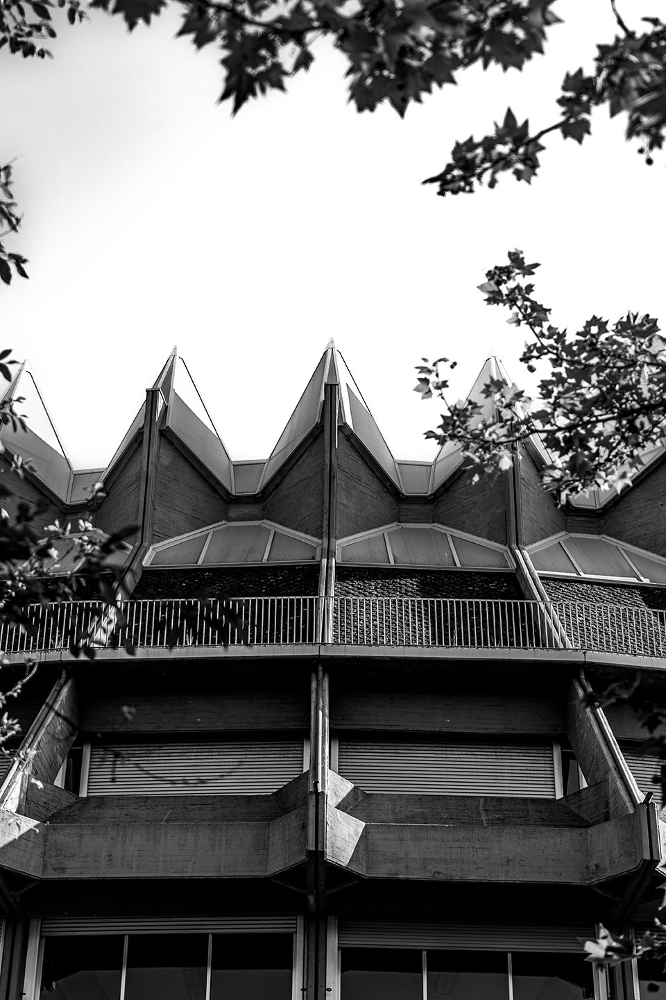
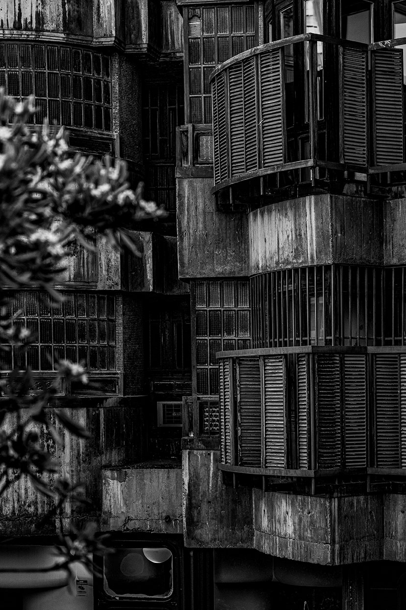
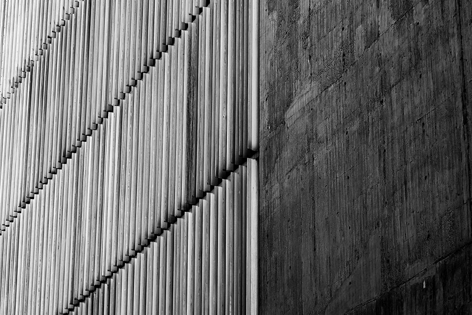

Madrid Brutalista
Fotografía de la arquitectura brutalista madrileña




.jpg)


Este proyecto fotográfico se centra en el estilo arquitectónico brutalista que marcó una era en el desarrollo urbano de Madrid durante las décadas de 1950 a 1970. A través de una serie de fotografías, busco capturar la esencia de un estilo que, a menudo, suscita tanto rechazo como fascinación. El brutalismo, con su énfasis en la funcionalidad y su uso predominante del hormigón expuesto, genera una atmósfera singular, tanto monumental como fría, que dota a la ciudad de una estética única y atemporal. Objetivo del trabajo: El objetivo de este proyecto es crear una serie de imágenes que no solo documenten la arquitectura brutalista en Madrid, sino que también resalten su impacto visual y su capacidad para transmitir emociones a través de formas puras y sin ornamentos. Las imágenes intentarán desvelar la expresividad del brutalismo, poniendo especial énfasis en los juegos de luces y sombras que producen las superficies de hormigón y en la monumentalidad de estas estructuras.